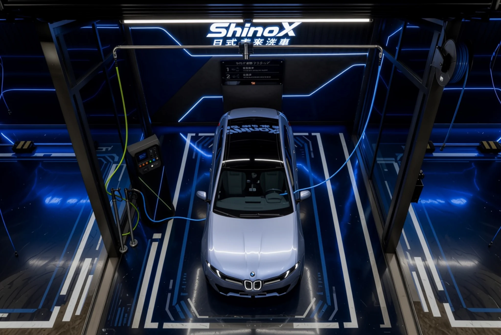
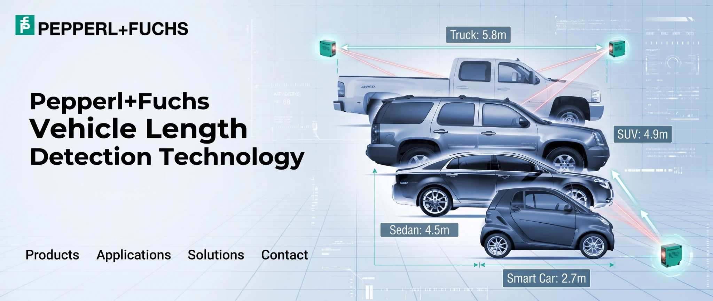

BRAND NEWS / SHINOX
More Than a Car Wash Machine — ShinoX Technical Support & Business Guidance
ShinoX aims to offer more than a machine: a support service covering equipment introduction, opening preparations and day-to-day operations.
Read more ↗NEWSROOM / TECHNOLOGY
Explore the ShinoX technology feature: vehicle identification, membership, payment choices and cloud operations.
Ask for current information ↗ShinoX aims to offer more than a machine: a support service covering equipment introduction, opening preparations and day-to-day operations.
Read more ↗
ShinoX explores a new wash bay concept combining European-inspired layouts with Japanese attention to detail.
Read more ↗
Intelligent vehicle-length sensing for cars of different sizes. Explore how sensing technology can support automated wash configuration.
Read more ↗
Smart license plate recognition and an optional touchscreen cloud payment kiosk, with flexible payment and management options.
Read more ↗LET’S BUILD WHAT’S NEXT